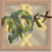

DOSBox mit Glide
Archivierte Anleitung
Dieser Artikel wurde archiviert, da er - oder Teile daraus - nur noch unter einer älteren Ubuntu-Version nutzbar ist. Diese Anleitung wird vom Wiki-Team weder auf Richtigkeit überprüft noch anderweitig gepflegt. Zusätzlich wurde der Artikel für weitere Änderungen gesperrt.
Artikel für fortgeschrittene Anwender
Dieser Artikel erfordert mehr Erfahrung im Umgang mit Linux und ist daher nur für fortgeschrittene Benutzer gedacht.
Zum Verständnis dieses Artikels sind folgende Seiten hilfreich:
 DOSBox ist ein DOS-Emulator, welcher die Umgebung von x86-Computern (inkl. Eingabegeräten, RAM, CD-ROM, CPU und MS-DOS) nachbildet. Das Ausführen DOS-basierter Software ist somit auch unter Ubuntu möglich.
Die meisten DOS-Spiele  laufen bis zum jetzigen Stand problemlos innerhalb der DOSBox. Jedoch gibt es einige Spiele die nur mit Glide-Grafikkarten laufen, bzw. manche, die mit Glide eine bessere Performance und bessere Grafik bieten (s.a. Links).
laufen bis zum jetzigen Stand problemlos innerhalb der DOSBox. Jedoch gibt es einige Spiele die nur mit Glide-Grafikkarten laufen, bzw. manche, die mit Glide eine bessere Performance und bessere Grafik bieten (s.a. Links).
Das Unternehmen 3dfx welches diese Karten produziert hat, gibt es seit dem Jahr 2000 nicht mehr. Deshalb sind die Karten nur noch sehr schwer zu erhalten und der Genuss von Spielen die Glide nutzen, scheint unmöglich. Abhilfe kann aber eine spezielle Version der DOSBox mit integrierten Glide-Wrapper schaffen, welcher die Glide-Instruktionen in OpenGL-Instruktionen umwandelt. Weiterhin sei anzumerken, dass man eine Grafikkarte mit Hardwarebeschleunigung benötigt, um Glide verwenden zu können [1].
DOSBox mit Glide¶
Achtung!
Die DOSBox mit aktiviertem Glide-Patch kann je nach verwendeter Hardware eine hohe Last erzeugen!
Installation¶
Bisher stellt die Kompilierung aus den Quellcode die einzige Methode dar, eine Glide-fähige DOSBox zu erhalten. Leider funktioniert die Kompilierung bisher nur mit dem Quellcode der DOSBox 0.73, weshalb man auf die richtige Version des Quellcodes achten muss, aber dazu später mehr.
Zuerst installiert man sich [2] die nötigen Werkzeuge über die folgenden Pakete:
libsdl1.2-dev
libsdl-sound1.2-dev
libsdl-net1.2-dev
libpcap-dev
build-essential
cvs
autoconf
libtool
 mit apturl
mit apturl
Paketliste zum Kopieren:
sudo apt-get install libsdl1.2-dev libsdl-sound1.2-dev libsdl-net1.2-dev libpcap-dev build-essential cvs autoconf libtool
sudo aptitude install libsdl1.2-dev libsdl-sound1.2-dev libsdl-net1.2-dev libpcap-dev build-essential cvs autoconf libtool
OpenGlide-Wrapper¶
Als erstes öffnet man ein Terminal [3]. Dann holt man sich den Quellcode des OpenGlide-Wrapper, kompiliert [4] diesen und installiert ihn:
cvs -d:pserver:anonymous@openglide.cvs.sourceforge.net:/cvsroot/openglide login
Falls nach einem Passwort gefragt wird, einfach mit Enter bestätigen.
cvs -z3 -d:pserver:anonymous@openglide.cvs.sourceforge.net:/cvsroot/openglide co -P openglide cd openglide ./bootstrap ./configure make sudo make install
Hinweis!
Zusätzliche Fremdquellen können das System gefährden.
Patchen des Quellcode¶
Als nächstes benötigt man den richtigen Quellcode  der DOSBox. Dafür das Paket dosbox-0.73.tar.gz herunterladen. Jetzt benötigt man nur noch den Patch. Dazu geht man auf diese Seite von vogons.zetafleet.com
der DOSBox. Dafür das Paket dosbox-0.73.tar.gz herunterladen. Jetzt benötigt man nur noch den Patch. Dazu geht man auf diese Seite von vogons.zetafleet.com  und lädt sich die beiden Dateien (DOSBox_glide.zip und glide2x.zip) aus dem 1. Beitrag runter. Nun kopiert man den Patch in ein Verzeichnis höher, als den Ordner mit dem Quellcode der DOSBox und stellt sicher, das der Ordner mit dem Quellcode dosbox heisst.
und lädt sich die beiden Dateien (DOSBox_glide.zip und glide2x.zip) aus dem 1. Beitrag runter. Nun kopiert man den Patch in ein Verzeichnis höher, als den Ordner mit dem Quellcode der DOSBox und stellt sicher, das der Ordner mit dem Quellcode dosbox heisst.
Danach patcht man den Quellcode mit folgenden Befehl:
cat dosbox_glide.diff | patch -p0
Der Befehl sollte ohne Probleme durchlaufen. Sollten dennoch welche auftauchen, sollte man sicher gehen, dass der Patch eine Ebene höher ist, als der Quellcode der DOSBox und dass der Ordner mit dem Quellcode dosbox heisst.
Kompilierung¶
Als nächstes muss die gepatchte DOSBox kompiliert werden. Dazu wechselt man in das Quellcodeverzeichnis und führt die folgenden Befehle aus:
./autogen.sh ./configure CPPFLAGS="-I /usr/local/include/openglide/" make sudo make install
Nun hat man eine glidefähige DOSBox auf seinem System installiert, aber dennoch muss man noch einige Einstellungen machen.
Konfiguration¶
Vor dem Starten der DOSBox muss darauf geachtet werden, folgenden Befehl auszuführen, damit die DOSBox auf die richtige libglide2x.so zugreift und nicht auf die vom System:
export LD_LIBRARY_PATH=/usr/local/lib
Danach kann man die DOSBox wie gewohnt starten. Wenn man sich einen Startmenueintrag [5] erstellen möchte, kann man auch die Befehle wie folgt nutzen:
LD_LIBRARY_PATH=/usr/local/lib dosbox
Als nächstes sollte man sicherstellen, ob in der dosbox.conf Glide aktiviert wird. Unter dem Abschnitt [glide] sollte sich ein Eintrag finden lassen mit glide=true. Im letzten Schritt, muss man die Datei glide2x.ovl aus einem der Downloads in das Spieleverzeichnis und in den Ordner, aus welchem man die DOSBox startet, kopieren. Dabei muss auf die Groß- und Kleinschreibweise geachtet werden. Diese muss mit folgendem Befehl angepasst werden:
rn Glide2x.ovl glide2x.ovl
Der Befehl ist nötig, damit der Wrapper die Datei finden kann. Nun hat man alles erledigt und kann endlich die DOSBox mit Glide nutzen.
- Erstellt mit Inyoka
-
 2004 – 2017 ubuntuusers.de • Einige Rechte vorbehalten
2004 – 2017 ubuntuusers.de • Einige Rechte vorbehalten
Lizenz • Kontakt • Datenschutz • Impressum • Serverstatus -
Serverhousing gespendet von